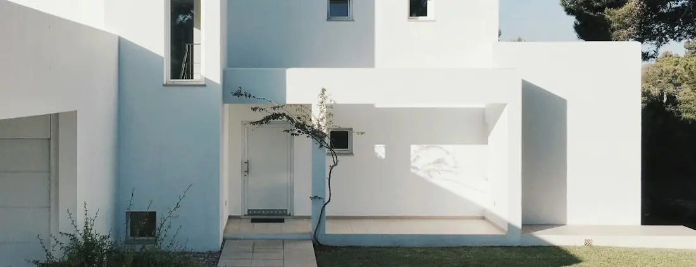
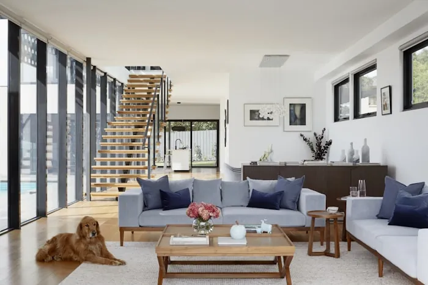

Our own town
Outdoor Remodeling Contractor in Davie, FL
The town our published address sits in — and the most varied set of properties anywhere in our coverage.
Our address is here, which is a fact rather than a sales pitch
Arco Outdoors' published business address is 2940 SW 81st Way, Davie, FL 33328. That makes Davie the market closest to us, and it is worth being precise about what that does and does not mean. It means shorter travel, easier site visits and simpler scheduling. It does not mean a Davie project is built to a different standard from one in Boca Raton, and it does not mean we maintain premises anywhere else — we work the whole of Broward, Miami-Dade and Palm Beach from this one address.
The more interesting thing about Davie is the town itself. It covers a large area and it has never settled into one type of housing. Acreage and horse-keeping properties sit near standard subdivisions from the eighties, which sit near recent zero-lot-line developments, which sit near older ranch houses on generous lots. It is entirely normal here for two enquiries a mile apart to be completely different projects.
So this page is organised around property type rather than around a service list. Work out which of the four below is closest to yours, and the rest of the conversation gets much shorter.
Proximity
What being nearby actually changes
Honest version: logistics, not quality. But logistics are worth something on a project that disturbs your house for a few weeks.
Site visits are easy to arrange
A short drive means a look at the property is a low-cost thing to do — before proposing, and again if something on site turns out to be different from what was described.
Deliveries are simpler to stage
Material arriving in the right order matters more than material arriving early. Being close makes it easier to stage deliveries to the sequence rather than dumping everything on day one.
Small jobs stay practical
A short run of paving or a single gate is harder to justify at the far edge of a coverage area. Close to home, a small piece of work is straightforwardly worth doing.
Coming back is not an event
If something needs a second look after the walkthrough, distance is not part of the decision about whether to come and look at it.
One point of accountability, wherever the work is
Our contractor licence is CBC1269393 and it is printed in the footer of every page on this site. Not every trade on an outdoor project is performed by the same licence holder — that is how construction works in Florida — so the split between what we perform and what we coordinate is set out in the written proposal rather than implied.
Know your lot
Four Davie yards, four different projects
Acreage and horse-keeping properties
Distances change everything. The approach from the road is often long enough to be its own project, boundary runs are measured in hundreds of feet, and there is normally room to bring machinery to the rear without dismantling a fence. The constraints are different too: easements and drainage swales, well and septic infrastructure, and existing use that has to keep functioning while work happens. Fence lines here are about containment and definition over long distances rather than screening one window.
Older ranch houses on generous lots
Usually a house that has been altered at least once already, which means part of the assessment is finding out what was done previously and how well. Original driveways and patios reaching the end of their life, screened enclosures from a different era, and single-glazed openings are the common threads. This is replacement work, and what is under the existing surface is the variable that decides the scope.
Established subdivisions
Regular lots, a rear yard with a defined boundary, frequently a pool that is older than the surround around it. The work is usually one or two well-chosen elements rather than a whole-yard programme: a rebuilt pool deck, a paved terrace sized properly, a turf panel where the grass has given up, a replacement fence. Access is adequate but not generous, so the route in gets planned rather than assumed.
Newer zero-lot-line developments
Compact yards where precision beats scale. Side access is often too narrow for machinery, which changes sequence and sometimes what is realistic. Every square foot is visible from inside, so setting out and edge detailing carry more weight than they would on an acre. Turf and small, well-proportioned paved areas do a great deal of work on these lots.
Available in Davie
Where the emphasis usually falls here
Everything we do is available across the whole coverage area. This is simply what Davie's property mix asks for most.
Driveways and approaches
A longer approach is both a load-bearing surface and the first thing anyone sees of the house. On larger parcels it is frequently the single biggest paved area on the property, and replacing it is a groundwork job before it is a paving job — what is under the existing surface decides most of the scope.
Pavers and patios
The base under nearly everything else. On compact lots the value is in accurate setting-out and clean edges; on larger ones it is in getting the levels and falls right across a big area. Patio sizing is worth deliberate thought either way — an oversized slab with nowhere to sit is the most common expensive mistake in this trade.
Artificial turf
Shaded side yards, dog runs and the narrow strips on zero-lot properties where grass has never established. The base and drainage underneath do the work; the fibre is the part people shop for.
Fencing
Purpose decides material, and in Davie the purposes vary more than usual — long boundary runs on acreage, privacy panels between close neighbours, and enclosures around water, which are governed by requirements rather than by preference and are confirmed for your property before anything is built.
Pool decks
Plenty of pools here are older than their surrounds. The first question is always overlay or rebuild, and it is answered by looking at the existing slab rather than by preference. Where a pool contractor is also involved, the pool's finished levels govern the deck's.
Impact windows and doors
Older Davie housing stock frequently still has its original openings. This is envelope work rather than yard work — permitted, inspected and documented differently — and it is far less disruptive done alongside a terrace project than a year after it.
Complete transformation
When several of those happen at once
Where a project involves the driveway, the rear yard and the openings between them, the thing that determines whether it goes well is not the quality of any single element. It is whether the elements were sequenced by somebody looking at all of them.
Groundwork and levels come first, because everything sits on them. Anything buried — drainage, conduit, gas, irrigation alterations — goes in while the ground is open, since retrofitting into finished paving means taking the paving up. Footings for structures are cast before the surfaces around them. Openings are measured and ordered early because they are made to size and have a lead time, and installed at a point in the programme where an open wall is not a problem. Boundary work goes last, after the machinery has stopped coming through the gap where the fence will stand.
None of that is complicated. It just requires one person holding the whole programme, which is the argument for a single contractor rather than four good ones who have never spoken to each other.
Design for the climate
Inland conditions, and a lot of flat ground
Davie sits inland, so the corrosive salt load that shapes hardware choices near the coast is not the governing factor here. What governs is sun, water and how little natural fall there is to work with.
Flat ground makes drainage a design decision. There is rarely a convenient slope to fall toward, so where water goes has to be worked out deliberately — which is exactly why a low spot that already ponds after a storm has to be resolved as part of the work rather than surfaced over.
Shade is the difference between a yard you own and a yard you use. Cover over part of a paved area changes the number of usable hours far more than any material specification does.
Everything paved gets hot. Lighter colours help at the margins; nothing stays cool in direct afternoon sun, and any product sold on that basis deserves a look at its documentation.
Storm season is part of the design brief. What is fixed down, what is freestanding and what gets brought inside are questions worth answering when the yard is being designed, not in September.
How it runs
From a phone call to a finished yard
-
A short conversation first
Which of the four property types you are on, what is bothering you, and anything you already know is awkward. Often enough to say straight away whether we are the right contractor for the job.
-
On-site assessment
Levels, drainage, access, the condition of what is already there, and any easement, well, septic or association constraint. Being nearby means this is scheduled easily rather than batched.
-
Requirements confirmed for the address
Which authority reviews the work — worth confirming rather than assuming in a town with unincorporated pockets and long boundaries — plus anything an association has to approve.
-
Written proposal
Scope, materials, sequence, what is included and what is not, and which parts are performed versus coordinated.
-
Build to the sequence
Groundwork, buried services, footings, surfaces, boundary, finishing — with access and delivery staged to match rather than everything landing at once.
-
Walkthrough and aftercare
The finished work walked with you, how to look after each material, and the documentation for anything permitted handed over as a set.
Examples
The kinds of surfaces and spaces described above



About these photographs
They are here to show the type of work this page describes. They are not presented as completed projects, and none of them is claimed to have been photographed in Davie — including on the page for the town our address is in.
Nearby
Markets around Davie
Common questions
Questions from Davie homeowners
Is Arco Outdoors a Davie business?
Our published business address is 2940 SW 81st Way, Davie, FL 33328, and our contractor licence is CBC1269393. We work across Broward, Miami-Dade and Palm Beach counties from that address rather than operating separate branches elsewhere, so Davie is the market closest to us. What that changes in practice is scheduling and how easily a site visit fits into a day — not the standard of the work, which is the same wherever the property is.
Do you work on larger parcels and acreage?
Yes, and it is one of the things that makes Davie different from a uniform subdivision market. Bigger parcels change the arithmetic: the approach from the road is often long enough to be a project on its own, boundary runs are measured in hundreds of feet rather than dozens, and there is usually room to get machinery to the rear without dismantling anything. They also come with their own constraints — well and septic infrastructure, easements, drainage swales and existing agricultural or equestrian use — all of which are established at the site visit before anything is drawn.
My lot is narrow with almost no side access. Is that a problem?
It is a constraint rather than a problem, and it is worth raising at the first call because it genuinely shapes the proposal. Where a machine cannot reach the rear yard, material has to be moved by hand or through the house-side route, and that affects sequence and sometimes what is realistic to build. It is far better to design around it from the start than to discover it on day one, and it is a routine condition on newer zero-lot-line developments.
Can the existing slab or patio at an older Davie house be reused?
Sometimes, and it is assessed rather than assumed. A sound, stable slab that is not moving can carry an overlay, which is less disruptive and keeps the existing base in service. A slab that is cracked because the ground beneath it has moved will pass that movement straight through to whatever is laid on top. Older houses also tend to have had at least one previous alteration, so part of the assessment is finding out what was done last time and how well.
Does backing onto a canal or drainage easement affect what I can build?
It can, in two ways. Access has to be preserved where an easement crosses the property, and what may be placed over it can be limited — which is a question of your specific easement rather than a general rule, so it is checked before anything is designed. Separately, the finished levels of any paved area near a canal bank need thinking about, because water leaving the surface has to go somewhere sensible. Both are ordinary conditions here and both are much cheaper to design around than to correct.
Do you handle permitting in Davie?
We handle the permitting process for the work we carry out, and we confirm the requirements that apply to your address as part of the project. Some Davie addresses fall in unincorporated areas or sit close to a boundary, which can change which authority reviews the work — another reason we confirm rather than assume. Where an association is involved as well, its approval runs on a separate track from the municipal one.
We are a short drive away
Tell us which kind of Davie lot you are on and what is not working. A free on-site visit, an honest assessment of what is already there, and a written scope.